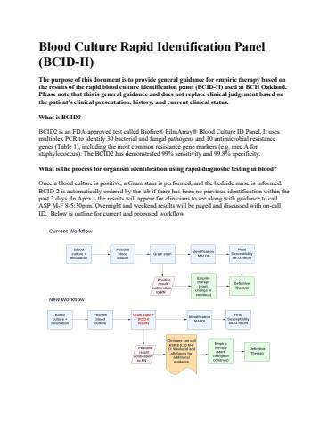

Hosted on idmp.ucsf.edu, no login. 13 pages, 535 KB
Blood Culture Rapid Identification Panel (BCID-II)
The purpose of this document is to provide general guidance for empiric therapy based on the results of the rapid blood culture identification panel (BCID-II) used at BCH Oakland.
Please note that this is general guidance and does not replace clinical judgement based on the patient's clinical presentation, history, and current clinical status.
What is BCID?
BCID2 is an FDA-approved test called Biofire® FilmArray® Blood Culture ID Panel. It uses multiplex PCR to identify 30 bacterial and fungal pathogens and 10 antimicrobial resistance genes (Table 1), including the most common resistance gene markers (e.g. mec A for staphylococcus). The BCID2 has demonstrated 99% sensitivity and 99.8% specificity.
What is the process for organism identification using rapid diagnostic testing in blood?
Once a blood culture is positive, a Gram stain is performed, and the bedside nurse is informed. BCID-2 is automatically ordered by the lab if there has been no previous identification within the past 3 days. In Apex – the results will appear for clinicians to see along with guidance to call ASP M-F 8-5:30p.m. Overnight and weekend results will be paged and discussed with on-call ID. Below is outline for current and proposed workflow
Why is ASP/ID being consulted with BCID-II results interpretation?
Studies has demonstrated that implementing stewardship practices alongside rapid diagnostic testing can significantly improve patient outcomes. According to a randomized trial conducted by Banerjee et al. (2015), patients who received stewardship in addition to rapid multiplex polymerase chain reaction-based blood culture identification and susceptibility testing experienced a dramatically reduced time to first appropriate de-escalation, with a median time of 21 hours (compared to 34 hours in the control group and 38 hours in the rapid multiplex group). The findings were statistically significant, with a p-value of less than 0.0001. Moreover, patients in the stewardship group were less likely to receive antibiotic treatment for contaminated blood cultures, indicating that stewardship practices can help reduce unnecessary antibiotic use and promote better patient care. This study suggests that the integration of stewardship into rapid diagnostic testing protocols can be a valuable strategy for enhancing clinical decision-making and improving patient outcomes.
How do I interpret the results?
Results from the BCID panel appear as a separate line below the culture result line in the viewer. Therapeutic decisions and treatment choices based on BCID results are listed in Table 2 and Table 3 (scroll below). Final susceptibilities should always be reviewed to determine if any adjustments in therapy are needed.
What are the most common pitfalls in interpreting BCID-2 results? Pathogens are identified at a genus level (e.g. Staphylococcus, Streptococcus) and multiple family level pathogens of the Enterobacterales order. The Staphylococcus genus PCR detects numerous species of staphylococci, including S. aureus, S.epidermidis, S.hominis, and others. When S. aureus is present, both genus and species will be detected. When coagulase-negative Staphylococcus such as S. hominis is detected, only the genus will be detected.
Polymicrobial infections
Certain infections can be polymicrobial in nature. For example, complicated intra-abdominal infections frequently have anaerobes as co-pathogens, which should not result in over-narrowing.
Some caveats associated with resistance genes
- For S. aureus, the detection of mec A/C/MREJ denotes the presence of MRSA.
- For S. epidermidis and S. lugdunensis, the detection of mec A/C predicts beta-lactam resistance.
- When the Staphylococcus genus is reported without the presence of S. aureus, S. epidermidis, or S. lugdunensis, mec A/C is not reported.
- Detection of MCR-1 predicts colistin resistance, at this time this does not have a high clinical value for pediatric population
Gram negative pathogen results: Enterobacterales order
When the Enterobacterales order is reported positive, it includes many gram-negative organisms, including E. coli, Klebsiella species, Enterobacter species, Proteus species, and Citrobacter species, among others. For example, when E. coli is reported positive, both Enterobacterales and E. coli will be positive. If an Enterobacterales order member is present but not the specific PCR target, only Enterobacterales will be reported positive.
Other general principles applicable to all results of BCID-II
- Narrow based on phenotypic susceptibility results in 24-48 hours.
- Dosing to be adjusted based on the site and extent of infection. Refer to dosing card in table 4.
- Patients with carbapenemase gene resistance (KPC, OXA-48, IMP, VIM and NDM), additional susceptibility testing needs to be requested from microbiology lab.
- For carbapenemase gene resistance - KPC, OXA-48, IMP, VIM and NDM - infection prevention needs to be informed and place patient in contact precautions.
Assessing blood culture contamination
Roughly 50% of blood cultures may grow organisms not truly representing bacteremia, referred to as contaminants. Coagulase-negative staphylococci (e.g. Staphylococcus epidermidis group), viridians streptococcus are some of the common commensals. If the patient is clinically stable with low pretest probability for bloodstream infection (e.g. lack of central venous catheter or endovascular prosthetic material), antibiotics may not be indicated. Refer to individual sections within Table 2 for further guidance.
Table 1
| Gram positive bacteria | Gram-negative bacteria | Yeast | Resistance Genes |
Enterococcus faecalis Listeria monocytogenes Staphylococcus genus Staphylococcus aureus Staphylococcus epidermidis Staphylococcus lugdunensis Streptococcus genus Streptococcus agalactiae Streptococcus pneumoniae Streptococcus pyogenes | Acinetobacter baumannii complex Bacteroides fragilis Haemophilus influenzae | Candida albicans Cryptococcus neoformans/gattii | Carbapenemases IMP Colistin Resistance -mcr-1 Extended spectrum beta-lactamases (ESBL) Methicillin Resistance Vancomycin Resistance |
Pathogens Detected vs Not Detected by BCID II
Pathogens | Pathogens Detected | Pathogens Not-Detected | |
Enterococcus | E. faecium E. faecalis | E. avium E. casseliflavus E. durans E. gallinarum E. hirae E. dispar E. saccharolyticus E. raffinosus E. mundtii | |
| Staphylococcus genus | It is predicted that only 5 species will not be detected. Of those, only S. equorum has been reported in a clinical setting. | S. equorum S. fluerettii S. lentus S. muscae S. rostri | |
Streptococcus genus Designed to detect most Viridians group species and non-Group A/B beta hemolytic streptococci. | All species within the Streptococcus genus should be amplified by one or more of the assays on the panel at positive blood culture levels. Some species may not be detected if present in a blood culture at low levels or if they have variant sequences (see right). | S. equi S. entericus S. halitosis S.hyovaginalis S. minor S. pantholopis S. oralis S. sobrinus S. suis S. uberis | |
Enterobacterales Designed to detect less Information about the detection of specific subspecies, strains, isolates, or serotypes of gram-negative bacteria is provided in the product instructions for use (Table 98 – Table 112) available at www.biofiredx.com/support/documents. | Cedeceae spp. In silico predication) | Pantoea spp. Phytobacter spp. Plesiomonas spp. Pluralibacter spp. Providencia spp Proteus spp. Pseudoescherchia spp. Rahnella spp. Raoultella spp. Salmonella spp. Serratia spp. Sodalis spp. Shigella spp. Tatumella spp. Trabulsiella spp. Yersinia spp. Serratia spp. Sodalis spp. Shigella spp. Tatumella spp. Trabulsiella spp. Yersinia spp. Yokanella spp. | Providencia heimbachae Photorhabdus asymbiotica Arsenophonus nasoniae |
Table 2
BCID II Results | Preferred therapy | Comments |
Gram positive Pathogens | ||
| Enterococcus faecalis | ||
| Van A/B negative (vancomycin susceptible) | Ampicillin +/- gentamicin | 97% of Enterococcus spp (n= 76) isolates were sensitive to ampicillin per Antibiogram 2023). |
Van A/B positive Vancomycin resistant | Linezolid +/- gentamicin | ID consult |
| Enterococcus faecium | ||
Van A/B negative (vancomycin susceptible) | Vancomycin | |
Van A/B Positive (vancomycin resistant) | Linezolid +/- gentamicin | ID consult Alternative: Daptomycin |
| Listeria monocytogenes | Ampicillin +/- gentamicin | ID consult |
| Staphylococcus species | ||
| Staphylococcus genus with all other staphylococcus species negative | Do not start antibiotics. Likely contaminant if 1 positive blood culture, patient is hemodynamically stable without risk factors (e.g. lack of central venous catheter or endovascular prosthetic material) If treatment is needed: Vancomycin | The mecA analyte is not reported for non-S. epidermidis and S. lugdunensis coagulase-negative species (e.g. S. hominis, S. simulans, S. capitis, among others). Presume beta-lactam resistance. |
| Staphylococcus aureus | ||
Mec A/C and MREJ negative = MSSA | Preferred Cefazolin If CNS source suspected: Oxacillin | ID consult |
| Mec A/C and MREJ positive = MRSA | Vancomycin | ID consult |
| Staphylococcus epidermidis | ||
| Single positive blood culture | Do not start antibiotics. Likely contaminant if 1 positive blood culture, patient is hemodynamically stable without risk factors (e.g. lack of central venous catheter or endovascular prosthetic material). Consider antimicrobial therapy if patient has risk factors for bacteremia (e.g. lack of central venous catheter or endovascular prosthetic material) | |
| Mec A/C negative | Cefazolin | Oxacillin is an alternative |
| Mec A/C positive | Vancomycin | |
Staphylococcus lugdunensis It can be a contaminant however also capable of severe disease, ID consult is recommended. Recommend repeating blood culture | ||
| mec A/C negative = oxacillin sensitive | Cefazolin or if CNS source suspected Oxacillin | |
| mec A/C positive = oxacillin resistant | Vancomycin | |
| Streptococcus species not S. agalactiae, S. pneumoniae, or S. pyogenes | ||
| Streptococcus genus with all other Strep species (S. agalactiae, S. pneumoniae, S. pyogenes results) negative | Do not start antibiotics. Likely contaminant if 1 positive blood culture, patient is hemodynamically stable without risk factors. Consider antimicrobial therapy if patient has risk factors for bacteremia (e.g. lack of central venous catheter or endovascular prosthetic material). When therapy is indicated: Ceftriaxone | |
| Streptococcus agalactiae (Group B Streptococcus) | Ampicillin | |
| Streptococcus pneumoniae | Ceftriaxone add Vancomycin when CNS infection is suspected | ID consult |
| Streptococcus pyogenes(Group A Streptococcus) | Ampicillin |
BCID II results | Preferred Therapy | Comments |
Gram Negative Pathogens | ||
Enterobacteriaceae AND/OR Eschericia coli, Klebsiella oxytoca, Klebsiella pneumoniae, Proteus, Serratia marcesens Oxa-48 or KPC positive (Carbapenemase) IMP, VIM, NDM (Carbapenemase) | Ceftriaxone
Ceftazidime/avibactam + aztreonam | Formerly Enterobacteriaceae. Note this is a group of possible enteric Gram-negative organisms, not a specific bacterial genus. See Table for list of pathogens included in this group ID consult is necessary for any detected resistance gene: Oxa-48, IMP, VIM, NDM, KPC Request susceptibility testing for ceftazidime/avibactam microbiology (x120-3536) |
Acinetobacter baumannii | Non-CNS: Ampicillin/sulbactam CNS: Meropenem | Meropenem = 100% (n=18) (Antibiogram 2023) ID consult CTX-M or KPC positive: unusual genotype |
| Bacteroides fragilis | Metronidazole | ID consult. Usually associated with abdominal source may need additional gram-negative coverage |
| Enterobacter cloacae | Cefepime | ID consult; Amp-C producer; cefepime preferred therapy |
| E. coli | Ceftriaxone | |
| Klebsiella aerogenes | Cefepime | Amp-C producer cefepime preferred therapy |
| Klebsiella oxytoca | Ceftriaxone | |
| Klebsiella pneumoniae | Ceftriaxone | |
| Proteus | Ceftriaxone | |
| Salmonella | Ceftriaxone | ID consult. |
| Serratia marcescens | Ceftriaxone | |
| Haemophilus influenzae | Ceftriaxone | H. flu type B may require prophylaxis of contacts (review Red Book) |
| Neisseria meningitidis | Ceftriaxone | ID consult N. meningitidis requires prophylaxis of contacts (review Red Book) |
Pseudomonas aeruginosa NDM/IMP/VIM Positive | Cefepime Ceftazidime/avibactam + Aztreonam | Immunocompromised patients with severe sepsis consider meropenem until susceptibility returns. Request susceptibility testing for ceftazidime/avibactam microbiology (x120-3536) CTX-M, KPC, OXA positive: unusual genotype IMP, VIM, or NDM positive additional treatment options may need to be considered. Refer to IDSA guidelines, further modification to therapy may be indicated. |
BCID Result Fungal | Antimicrobial Recommendations |
| Candida auris | <2 months of age: amphotericin B deoxycholate 1 mg/kg daily ≥2 months of age: micafungin 10 mg/kg/day IV; maximum 100 mg IV daily |
| Candida glabrata | Neonate: amphotericin B deoxycholate 1mg/kg daily Non-neonate: micafungin 10 mg/kg/day, maximum 100 mg IV daily |
| Candida krusei | Neonate: amphotericin B deoxycholate 1mg/kg daily Non-neonate: micafungin 10 mg/kg/day, maximum 100 mg IV daily |
| Candida parapsilosis | Neonate: amphotericin B deoxycholate 1mg/kg daily Non-neonate: micafungin 10 mg/kg/day, maximum 100 mg IV daily |
| Candida tropicalis | Neonate: amphotericin B deoxycholate 1 mg/kg daily Non-neonate: micafungin 10 mg/kg/day, maximum 100 mg IV daily |
| Cryptococcus neoformans/gattii | Liposomal amphotericin B (5–7.5 mg/kg/day) is indicated in combination with oral flucytosine (25 mg/kg/dose, 4 times/day when renal function is normal) as first-line induction therapy for pediatric patients with meningeal and/or other serious cryptococcal infections |
Table 3 Dosing table recommendations is for pediatric population (>3 mo), for neonatal dosing please refer to idmp neonatal dosing
Antibiotic | Dose | Maximum Dose |
| Ampicillin | 50 mg/kg/dose IV q6h | 2000 mg/dose |
| Ampicillin/sulbactam | 50 mg ampicillin/kg/dose IV q6h | 2000 mg ampicillin/dose |
| Aztreonam | 35 mg/kg/dose IV q8h | 2000 mg/dose |
| Cefazolin | 50 mg/kg/dose IV q8h | 2000 mg/dose |
| Cefepime | 50 mg/kg/dose IV q8h | 2000 mg/dose |
| Ceftazidime/Avibactam | ≥ 3 to <6 mo: IV: 40 mg ceftazidime/kg/dose IV q8h ≥ 6 mo: 50 mg ceftazidime/kg/dose IV q8h | 2000 mg ceftazidime/dose |
| Ceftriaxone | 50 mg/kg/dose IV q24h | 2000 mg/dose |
| Daptomycin | < 7 yo: 12 mg/kg/dose IV q24h 7 yo to < 12 yo: 9 mg/kg/dose IV q24h ≥12 yo: 7 mg/kg/dose IV q24h | N/A |
| Ertapenem | ≥ 3 mo to < 12 yo: 15 mg/kg/dose IV q12h ≥ 12 yo: 1000 mg IV q24h | ≥ 3 mo to ≤ 11 yo: 500 mg/dose ≥ 12 yo: 1000 mg/dose |
| Gentamicin | 7 mg/kg/dose IV q24h | N/A |
| Linezolid | <12 yo: 10 mg/kg/dose IV q8h ≥12 yo: 10 mg/kg/dose IV q12h | 600 mg/dose |
| Meropenem | 20 mg/kg/dose IV q8h | 1000 mg/dose |
| Oxacillin | 50 mg/kg/dose IV q6h | 2000 mg/dose |
| Vancomycin | 1 to 2 mo: 15 mg/kg/dose IV q6h 3 mo to < 12 yo: 17.5 mg/kg/dose IV q6h ≥ 12 yo: 15 mg/kg/dose IV q6h | Initial max 4000 mg/DAY |